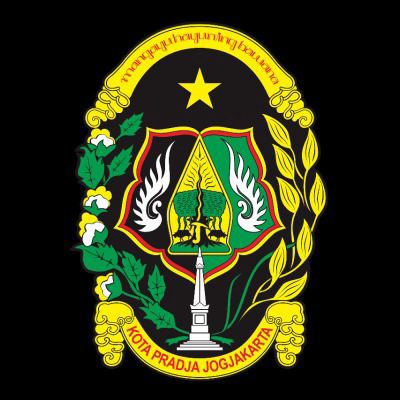

Hasil Seleksi Administrasi CPNS Pemerintah Kota Yogyakarta 2018
Berdasarkan Keputusan Menteri Pendayagunaan Aparatur Negara dan

Perubahan Hasil Seleksi Administrasi Penerimaan CPNS Pemerintah Kota Yogyakarta
Berdasarkan hasil verifikasi ulang seleksi